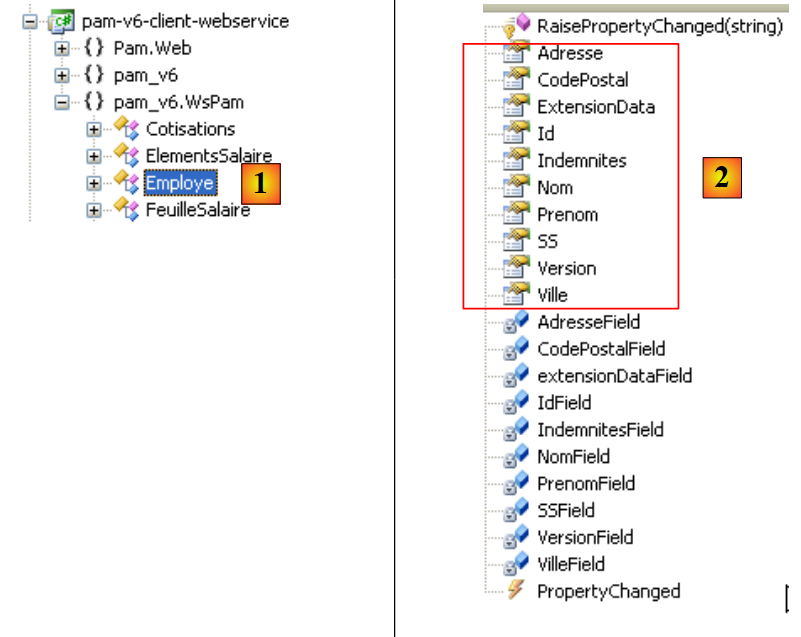
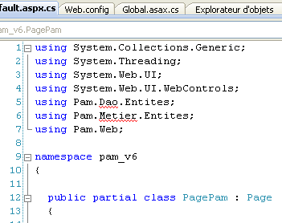

10. The application [SimuPaie] – version 6 – client ASP.NET of a web service
10.1. The application architecture
We are evolving the client/server architecture of the NUnit test as follows:
 |
In [1], the NUnit test is replaced by the version 8 web application. It is important to note here that this architecture includes two web servers not shown:
- a web server that runs the [S] web service. It will run in a first instance of Visual Web Developer.
- a web server running the [1] web client. It will run in a second instance of Visual Web Developer.
10.2. The Visual Web Developer project for client [web]
We are creating a new web project ASP.NET:
 |
- In [1], we select a C# web project
- In [2], we select "Web Application ASP.NET"
- In [3], we name the web project
- In [4], we specify a location for this project
- In [5], the project is created
We modify some project properties:
 |
- in [1], the name of the assembly that will be generated
- in [2], the default namespace for the classes and interfaces that will be created
To build the [pam-v6-client-webservice] project, we can retrieve the [Global.asax] and [Default.aspx] files from the [pam-v4-3tier-nhibernate-multivues-monopage] web project and copy them into the [pam-v6-client-webservice] project. First, do this using Windows Explorer:
 |
- in [1], the folder from the [pam-v4-3tier-nhibernate-multivues-monopage] project
- in [2], the [pam-v6-client-webservice] project folder after copying
- the [images, pam, ressources]
- the [Global.asax, Global.asax.cs] files
- the files [Default.aspx, Default.aspx.cs, Default.aspx.designer.cs]
- to [3], in Visual Studio Express, display all project files to show the newly added files
- In [4], include the added folders and files in the project
 |
- in [5] the new project [pam-v6-client-webservice]
At this point, we can build the project for the first time ([6]). The following errors occur:
To understand and fix these errors, we need to look at the architecture of the web project under development:
 |
The [pam-v6-client-webservice] project corresponds to the [web] and [1] layers in the diagram above. We can see that this layer communicates with the [C] client of the web service, a client that we will generate shortly.
- Errors 2, 5, and 7 stem from the fact that the code for [pam-v4] referenced DLL from the [metier] layer, DLL, which is now on the server side and not on the client side.
- Errors 1 and 3 have the same cause, but this time for DLL in the [dao] layer
- Error 4 occurs because the code for [Global.asax] uses Spring, and our project does not reference Spring’s DLL. We will add this reference.
- Error 6 occurs because the [Employe] class is defined in the [dao] layer, which does not exist on the client side.
Namespace errors 1, 2, 4, 5, 6, and 7 will be resolved by generating the C client for the web service. Error 3 is resolved by adding a reference to Spring’s DLL to the project. We can proceed as follows:
 |
- In [1], add a reference to the [pam-v6-client-webservice] project
- In [4], we added a reference to DLL and [Spring.Core] from the [lib] folder.
After adding this reference in Spring, the project generation shows one fewer error. All other errors are due to lines of code that reference objects from the [metier] and [dao] layers, which are now on the server. We will see that these missing objects will be generated in the [C] client of the web service.
 |
Before generating the [C] web service client, we will modify the namespace of the various classes present. They are currently in the [pam-v4] namespace. We are changing this namespace to [pam-v6]. The affected files are as follows: Default.aspx.cs, Default.aspx.designer.cs, Global.asax.cs. For example:
....
namespace pam_v6
{
public class Global : System.Web.HttpApplication
{
// --- static application data ---
public static Employe[] Employes;
public static IPamMetier PamMetier = null;
....
Line 2: the namespace pam_v4 has been replaced by the namespace pam_v6.
In addition, the markup for the files Default.aspx and Global.asax must be modified:
 |
The markup for [Default.aspx] becomes:
<%@ Page Language="C#" AutoEventWireup="true" CodeFile="Default.aspx.cs" Inherits="pam_v6.PagePam" %>
<!DOCTYPE html PUBLIC "-//W3C//DTD XHTML 1.0 Transitional//EN" "http://www.w3.org/TR/xhtml1/DTD/xhtml1-transitional.dtd">
.....
Line 1: The Inherits attribute specifies the class name of the [Default.aspx.cs] file. We change the namespace.
The markup for [Global.asax] becomes:
<%@ Application Codebehind="Global.asax.cs" Inherits="pam_v6.Global" Language="C#" %>
Above, we change the namespace of the Inherits attribute.
We now generate the [C] client for the web service.
 |
To perform the following steps, the [S] and [pam-v5-webservice] web services must be running in a separate instance of Visual Web Developer.
 |
- In [1], a reference to the web service [pam-v5-webservice] is added to the project [pam-v6-client-webservice]
- In [2], the URI of the web service [pam-v5-webservice]. This is the URL of the file WSDL for this web service. In the construction of the [pam-v5-webservice] web service, we explained how to determine this Url.
- In [3], the wizard is asked to process the WSDL file specified in [2]
- In [4], the [Service1Soap] web service is discovered, and in [5], the remote methods it exposes are listed.
- In [6], we set the namespace in which the classes and interfaces of the [C] client will be generated
- We start generating the client [C]
 |
- In [1], the generated client. Double-click it to access its contents.
- In [2], in the Object Explorer, the classes and interfaces of the pam_v6.WsPam namespace are displayed. This is the namespace of the generated client.
- In [3], the class that implements the web service client.
- In [4], the methods implemented by the client [Service1SoapClient]. Here you will find the two methods of the remote web service [5] and [6].
- In [2], we find the images of the layer entities:
- [metier]: FeuilleSalaire, ElementsSalaire
- [dao]: Employee, Cotisations, Indemnites
Moving forward, keep in mind that these images of remote entities are located on the client side and in the pam_v6.WsPam namespace.
Let’s examine the methods and properties exposed by one of them:
 |
- In [1], we select the local class [Employe]
- In [2], we find the properties of the remote entity [Employe] as well as private fields used for the local entity’s own purposes.
Let’s examine the code for [Global.asax.cs], which contains errors:
 |
- Lines 3 and 4 use namespaces that exist on the server but not on the client.
- Line 13 uses a class named [Employe] for which the correct namespace has not been declared
- Line 14 uses an interface IPamMetier that is unknown on the client.
We have already encountered similar issues in the C# client discussed earlier.
In the architecture:
 |
- the local [metier] layer is implemented by the [C] client of type pam_v6.WsPam.Service1SoapClient, which does not implement the IPamMetier interface even though it has methods with the same names.
- The entities handled (Employee, Indemnites, Cotisations) by the generated client [C] are in the pam_v6.WsPam namespace
The code for [Global.asax.cs] evolves as follows:
using System;
using System.Collections.Generic;
using Pam.Web;
using Spring.Context.Support;
using pam_v6.WsPam;
namespace pam_v6
{
public class Global : System.Web.HttpApplication
{
// --- static application data ---
public static Employe[] Employes;
public static Service1SoapClient PamMetier = null;
public static string Msg;
public static bool Erreur = false;
// application startup
public void Application_Start(object sender, EventArgs e)
{
// using the configuration file
try
{
// instantiation layer [metier]
PamMetier = ContextRegistry.GetContext().GetObject("pammetier") as Service1SoapClient;
// simplified list of employees
Employes = PamMetier.GetAllIdentitesEmployes();
// we succeeded
Msg = "Base chargée...";
}
catch (Exception ex)
{
// we note the error
Msg = string.Format("L'erreur suivante s'est produite lors de l'accès à la base de données : {0}", ex);
Erreur = true;
}
}
public void Session_Start(object sender, EventArgs e)
{
// put an empty simulation list in the session
List<Simulation> simulations = new List<Simulation>();
Session["simulations"] = simulations;
}
}
}
Line 24 instantiates the [C] layer using Spring. The configuration required for this instantiation is defined in [web.config]:
<configSections>
<sectionGroup name="system.web.extensions" type="System.Web.Configuration.SystemWebExtensionsSectionGroup, System.Web.Extensions, Version=3.5.0.0, Culture=neutral, PublicKeyToken=31BF3856AD364E35">
...
</sectionGroup>
<sectionGroup name="spring">
<section name="context" type="Spring.Context.Support.ContextHandler, Spring.Core" />
<section name="objects" type="Spring.Context.Support.DefaultSectionHandler, Spring.Core" />
</sectionGroup>
</configSections>
<spring>
<context>
<resource uri="config://spring/objects" />
</context>
<objects xmlns="http://www.springframework.net">
<object id="pammetier" type="pam_v6.WsPam.Service1SoapClient,pam-v6-client-webservice"/>
</objects>
</spring>
Line 16: The [metier] layer is an instance of the [pam_v6.WsPam.Service1SoapClient] class, which can be found in the DLL and [pam-v6-client-webservice] layers. Recall that we configured the [pam-v6-client-webservice] project to generate this DLL.
There are still a few errors in [Default.aspx.cs]:
 |  |
- lines 5, 6: these namespaces no longer exist. The entities are now in the pam_v6 or pam_v6.WsPam namespace.
- line 98: the generated client [C] did not inherit the [PamException] class from the [dao] layer. It could not do so because the web service does not expose this exception. We choose to replace PamException with its parent class Exception.
The code becomes:
...
using System.Web.UI.WebControls;
using pam_v6.WsPam;
namespace pam_v6
{
public partial class PagePam : Page
{
...
...
try
{
feuillesalaire = Global.PamMetier.GetSalaire(DropDownListEmployes.SelectedValue, HeuresTravaillées, JoursTravaillés);
}
catch (Exception ex)
{
...
Once these errors are corrected, we can run the web application:
 |
- in [1], the URL of the web client for the remote web service
- in [2], the employee combo box has been populated. The data it contains comes from the web service.
We invite the reader to test this version, a copy of version.